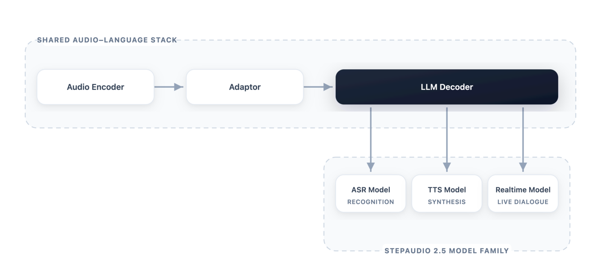
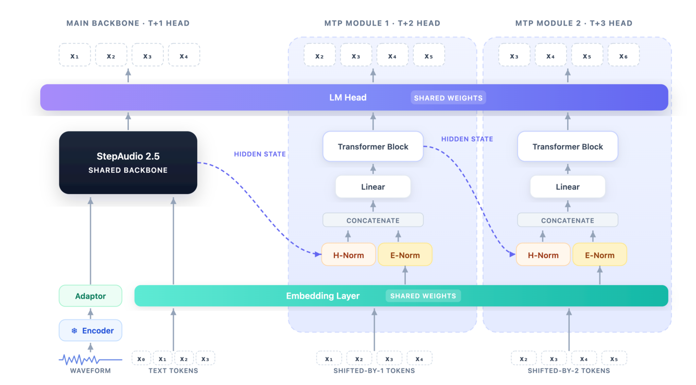
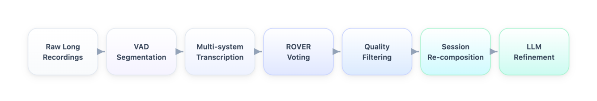
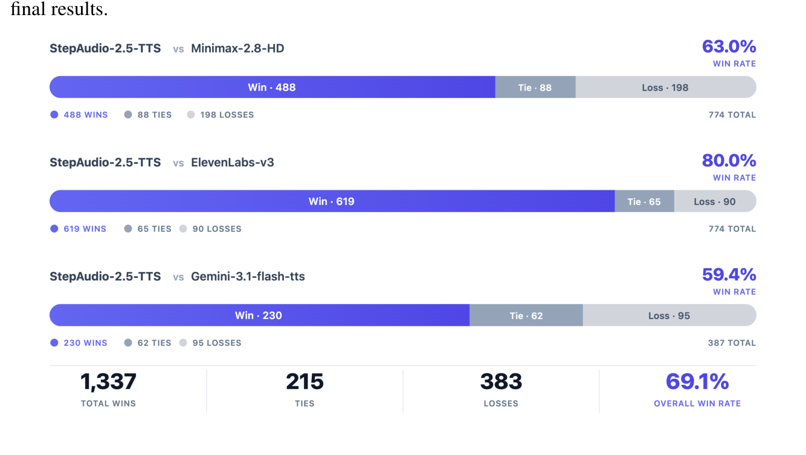
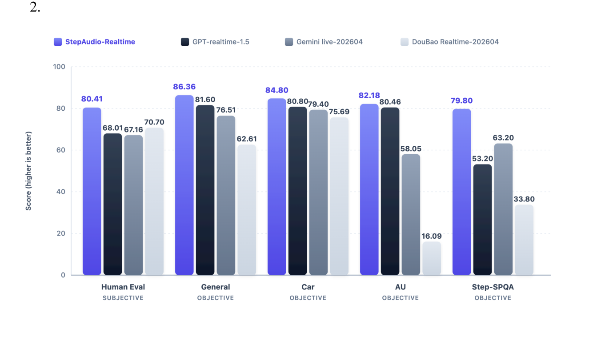

StepFun-Audio TeamStepFun-Audio Team
摘要Abstract
Unified audio-language modeling has emerged as a prominent trend in modern speech systems, promising to bring the reasoning capabilities of large language models to auditory tasks. However, existing unified foundations often struggle to match the depth of specialized systems across automatic speech recognition (ASR), text-to-speech synthesis (TTS), and realtime spoken interaction. Bridging this gap remains an open challenge. This report presents StepAudio 2.5, a unified audiolanguage foundation model that matches or exceeds specialized systems across all three capabilities. Rather than treating these tasks as architecturally distinct, we operate on the premise that once text and audio share a multimodal representational space, task specialization becomes a matter of operational regimes: data construction, optimization targets, and decoding constraints. Guided by this insight, we advance the post-training paradigm from standard supervised learning to task-tailored Reinforcement Learning from Human Feedback (RLHF), using it as the primary mechanism to define complex optimization targets. We leverage this RLHF-centric alignment, alongside specialized decoding, to shape a shared backbone into three distinct operational modes. Concretely, the ASR branch advances transcription efficiency via verifiable multi-token decoding; the TTS branch achieves controllable, expressive synthesis through preference-based RLHF and context-rich supervision; and the Realtime branch realizes low-latency, persona-consistent dialogue via generative reward modeling within an RLHF framework. On standard benchmarks, StepAudio 2.5 achieves state-of-the-art results across ASR, TTS, and Realtime, demonstrating that a singular audio-language foundation can successfully internalize the distinct deployment objectives of speech understanding, generation, and live interaction.
统一音频-语言建模已成为现代语音系统的一个显著趋势，它有望把大语言模型的推理能力带到听觉任务上。然而，现有的统一基础模型往往难以在自动语音识别（ASR）、语音合成（TTS）和实时语音交互这三项能力上同时匹敌专用系统的深度。弥合这一差距仍是一个开放挑战。本报告介绍 StepAudio 2.5——一个统一音频-语言基础模型，它在全部三项能力上均达到或超过专用系统。我们并不把这些任务当作架构上截然不同的东西，而是基于这样一个前提：一旦文本与音频共享一个多模态表征空间，任务专门化就变成了运行域（operational regimes）的问题——即数据构造、优化目标和解码约束。在这一认识指引下，我们把后训练范式从标准的监督学习推进到为任务定制的基于人类反馈的强化学习（RLHF），将其作为定义复杂优化目标的主要机制。我们利用这种以 RLHF 为中心的对齐方式，配合专门的解码策略，把同一个共享骨干塑造成三种不同的运行模式。具体来说：ASR 分支通过可验证的多 token 解码提升转录效率；TTS 分支通过基于偏好的 RLHF 和富上下文监督实现可控、富有表现力的合成；Realtime 分支则借助 RLHF 框架内的生成式奖励建模实现低延迟、人设一致的对话。在标准基准上，StepAudio 2.5 在 ASR、TTS 和 Realtime 三方面均取得当前最优结果，表明单一的音频-语言基础模型能够成功内化语音理解、生成和实时交互各自不同的部署目标。
1 引言Introduction
Automatic speech systems are entering a period of architectural convergence, driven by the increasing dominance of large language models (LLMs): as LLMs became the standard interface for text-based reasoning, treating speech as another sequence type within the same modeling framework became a natural design choice. In automatic speech recognition (ASR), the dominant paradigm has evolved from alignment-based and encoder-decoder transduction approaches [1–3] through largescale weakly supervised acoustic models such as Whisper [4], and more recently toward systems that couple strong acoustic encoders with LLM decoders [5–8]. In parallel, text-to-speech (TTS) synthesis has shifted from hand-engineered pipelines toward generative modeling over increasingly abstract speech representations, with commercial systems such as ElevenLabs-v3, Minimax Speech-2.8-hd, and Gemini-Flash-TTS advancing the controllability and expressivity of synthesized speech. A third frontier has emerged in realtime conversational speech agents, exemplified by GPT-realtime, Gemini Live, and Doubao Realtime, that must understand paralinguistic signals, respond with low latency, preserve persona, and remain emotionally appropriate within an unfolding interaction. These three trajectories now meet at a common point: speech is no longer treated as a modality requiring a fully separate stack, but as another sequence type that can be mapped into and out of a shared language-centric latent space, as demonstrated by recent unified audio-language foundations [9–11].
在大语言模型（LLM）日益占据主导地位的推动下，自动语音系统正进入一个架构趋同的时期：随着 LLM 成为文本推理的标准接口，把语音当作同一建模框架下的另一种序列类型，就成了一个自然的设计选择。在自动语音识别（ASR）领域，主流范式从基于对齐和编码器-解码器的转导方法 [1–3]，演进到以 Whisper [4] 为代表的大规模弱监督声学模型，最近又走向把强声学编码器与 LLM 解码器耦合的系统 [5–8]。与之并行，语音合成（TTS）也从手工设计的流水线转向在越来越抽象的语音表征上做生成式建模，ElevenLabs-v3、Minimax Speech-2.8-hd、Gemini-Flash-TTS 等商用系统不断提升合成语音的可控性与表现力。第三条前沿出现在实时语音对话智能体上，以 GPT-realtime、Gemini Live、Doubao Realtime 为代表：它们必须理解副语言信号、以低延迟回应、保持人设，并在展开的交互中保持情绪得体。这三条轨迹如今汇聚到同一点：语音不再被视为需要一个完全独立技术栈的模态，而是另一种可以被映射进、映射出一个以语言为中心的共享潜在空间的序列类型——近期的统一音频-语言基础模型 [9–11] 已经证明了这一点。
The appeal of this convergence extends beyond consolidating previously separate models into a unified architecture. Traditional cascaded pipelines connect ASR, an intermediate language model, and TTS as isolated stages, inevitably discarding information when speech is reduced to a textual intermediate representation [12–14]. A unified audio-language foundation instead preserves speech information end-to-end, allowing paralinguistic cues, emotional state, and conversational context to directly influence recognition, synthesis, and dialogue generation [15–19]. Such models also directly leverage the semantic, conversational, and reasoning capabilities already developed in LLMs. Under this formulation, audio-language modeling is not merely a matter of replacing task-specific systems with a shared backbone, but of establishing a common representational substrate where information previously lost between stages remains available throughout the interaction process.
这种趋同的吸引力，不只是把过去分离的多个模型整合进一个统一架构。传统级联流水线把 ASR、中间语言模型和 TTS 连接为彼此孤立的阶段，当语音被压缩成文本中间表示时，信息不可避免地被丢弃 [12–14]。统一音频-语言基础模型则端到端地保留语音信息，使副语言线索、情绪状态和对话上下文能够直接影响识别、合成和对话生成 [15–19]。这类模型还可以直接利用 LLM 已经发展出的语义、对话和推理能力。在这一表述下，音频-语言建模不只是用一个共享骨干替换各任务专用系统，而是要建立一个共同的表征基底，让过去在各阶段之间丢失的信息在整个交互过程中始终可用。
Open-source efforts such as Step-Audio 2 [9] and Qwen3-Omni [10], alongside large-scale commercial systems including GPT-4o, Gemini [20], and Doubao, have all moved toward end-to-end audio-language foundations spanning ASR, TTS, and realtime spoken interaction [14, 21–26]. Despite this shared direction, simultaneously meeting the deployment requirements of all three capabilities within a single model remains challenging. ASR prioritizes accurate and efficient long-form transcription, and TTS emphasizes controllable and expressive synthesis, while realtime interaction further requires low-latency turn-taking together with persona consistency and paralinguistic responsiveness. These objectives are not naturally aligned, and existing unified systems often achieve strong performance on some capabilities while remaining behind specialized systems on others. Closing this gap remains an active focus of audio-language research.
开源工作如 Step-Audio 2 [9] 和 Qwen3-Omni [10]，连同 GPT-4o、Gemini [20]、Doubao 等大规模商用系统，都在走向横跨 ASR、TTS 和实时语音交互的端到端音频-语言基础模型 [14, 21–26]。尽管方向一致，要在单一模型内同时满足全部三项能力的部署需求仍然困难。ASR 追求准确且高效的长音频转录，TTS 强调可控且富有表现力的合成，而实时交互则进一步要求低延迟的轮次切换，以及人设一致性和副语言响应能力。这些目标并不天然一致，现有的统一系统往往在某些能力上表现很强，却在另一些能力上落后于专用系统。弥合这一差距仍是音频-语言研究的活跃焦点。
This report presents StepAudio 2.5, building on the Step-Audio line of work [9, 27, 28] to narrow the gap between unified and specialized speech systems. The system is most naturally understood not as a collection of parallel endpoints loosely assembled around a shared name, but as a singular audio-language foundation model guided by a central thesis:
本报告介绍 StepAudio 2.5，它建立在 Step-Audio 系列工作 [9, 27, 28] 之上，旨在缩小统一语音系统与专用语音系统之间的差距。理解这套系统最自然的方式，不是把它看作围绕同一个名字松散拼装的一组并行端点，而是一个由中心论点指引的单一音频-语言基础模型：
Once text and audio share a well-shaped representational space, the differences among downstream tasks migrate away from architecture toward operational regimes: data, objectives, and decoding constraints.
一旦文本与音频共享一个良好塑造的表征空间，下游任务之间的差异就从架构迁移到运行域：数据、优化目标和解码约束。
Following this insight, we view post-training as the primary lever for shaping each capability to its specific deployment objective. Rather than treating ASR, TTS, and realtime interaction as separate engineering tracks, we refine the shared multimodal prior through a unified alignment paradigm. Crucially, we move beyond basic supervised fine-tuning (SFT) by establishing Reinforcement Learning from Human Feedback (RLHF) as the central mechanism for capturing nuanced human preferences and paralinguistic behaviors. We complement this RLHF-driven alignment with capability-specific SFT and specialized decoding strategies. Concretely, the ASR branch advances the quality-efficiency frontier by coupling the shared decoder with a verifiable multi-token decoding head, exploiting acoustic determinism to emit multiple tokens per step. The TTS branch adapts the backbone for controllable generation via semantic-to-audio alignment, integrating context-rich supervision with human-preference-driven RLHF. Finally, the Realtime branch extends the foundation toward low-latency spoken dialogue through progressive SFT for persona and paralinguistic sensitivity, followed by RLHF driven by a generative reward model and explicit interaction rubrics. On standard benchmarks across the three capabilities, StepAudio 2.5 achieves state-of-the-art results, outperforming both leading unified audio-language models and specialized systems built for individual tasks.
沿着这一认识，我们把后训练视为把每项能力塑造到其具体部署目标的主要杠杆。我们并不把 ASR、TTS 和实时交互当作各自独立的工程轨道，而是通过一个统一的对齐范式来精炼共享的多模态先验。关键是，我们超越了基础的监督微调（SFT），把基于人类反馈的强化学习（RLHF）确立为捕捉细腻人类偏好与副语言行为的核心机制。我们以面向具体能力的 SFT 和专门的解码策略来补充这套 RLHF 驱动的对齐。具体来说，ASR 分支把共享解码器与一个可验证的多 token 解码头耦合，利用声学的确定性在每一步发出多个 token，从而推进质量-效率前沿。TTS 分支通过语义到音频的对齐，把骨干改造为可控生成，并将富上下文监督与人类偏好驱动的 RLHF 结合起来。最后，Realtime 分支通过面向人设与副语言敏感性的渐进式 SFT，再辅以由生成式奖励模型和显式交互评分准则驱动的 RLHF，把这一基础模型扩展到低延迟语音对话。在覆盖三项能力的标准基准上，StepAudio 2.5 取得当前最优结果，既超过领先的统一音频-语言模型，也超过为单项任务打造的专用系统。
2 统一基础架构Unified Foundation Architecture
2.1 共享骨干Shared Backbone
The architecture follows a familiar audio-encoder–adapter–LLM-decoder pattern that has become central to audio-language modeling [9, 10]. A frozen audio encoder converts waveform-derived features into compact acoustic embeddings. A lightweight adaptor maps those embeddings into the hidden space of a large decoder initialized from a text LLM. The decoder then operates over a unified sequence space in which conventional text tokens and newly introduced audio tokens can both appear.
该架构遵循在音频-语言建模中已成为主流范式的「音频编码器—适配器—LLM 解码器」模式 [9, 10]。一个冻结的音频编码器把由波形导出的特征转换为紧凑的声学嵌入。一个轻量适配器把这些嵌入映射到一个从文本 LLM 初始化的大型解码器的隐空间中。解码器随后在一个统一的序列空间上运行，常规的文本 token 与新引入的音频 token 都可以出现在其中。
This design is intentionally asymmetric. The encoder is responsible for stable acoustic abstraction, while the decoder carries the burden of semantics, context management, instruction following, and generation. Such asymmetry is not a limitation; it is the systems decision that makes the model family coherent. Once semantics live primarily in the decoder, downstream tasks can share most of the model even when their outputs differ.
这一设计是有意不对称的。编码器负责稳定的声学抽象，而解码器承担语义、上下文管理、指令遵循和生成的全部重担。这种不对称不是缺陷，而是让整个模型家族保持连贯的系统级决策。一旦语义主要存在于解码器中，下游任务即使输出各不相同，也能共享模型的大部分。
Figure 1 summarizes the structural organization used throughout this report. At the center is the shared StepAudio 2.5 foundation model, which supports three model-level specializations: ASR, TTS, and Realtime. These three systems share the same audio-language stack while serving different deployment regimes, making the figure a compact summary of how one foundation is specialized for recognition, synthesis, and live spoken interaction.
图 1 概括了本报告通篇使用的结构组织方式：中心是共享的 StepAudio 2.5 基础模型，它支撑三个模型级专门化——ASR、TTS 和 Realtime。这三套系统共享同一套音频-语言栈，但服务于不同的部署域，因此该图是对「一个基础模型如何被专门化为识别、合成和实时语音交互」的紧凑总结。
2.2 作为定向推理的任务专门化Task Specialization as Directional Inference
StepAudio 2.5 supports three primary inference directions.
StepAudio 2.5 支持三个主要的推理方向。
• In ASR, audio embeddings condition the decoder to generate transcript tokens. The output space is narrow, discrete, and strongly anchored by the speech signal.
• 在 ASR 中，音频嵌入作为条件，引导解码器生成转录文本 token。其输出空间狭窄、离散，并被语音信号强锚定。
• In TTS, text and control instructions condition the decoder to generate audio tokens or intermediate audio representations. The output space is much richer, and the central challenge is not lexical correctness but faithful, natural, and expressive realization.
• 在 TTS 中，文本与控制指令作为条件，引导解码器生成音频 token 或中间音频表示。其输出空间要丰富得多，核心挑战不在于用词正确，而在于忠实、自然且富有表现力的实现。
• In Realtime, the model couples audio understanding and response generation under strict turn-level latency constraints, while maintaining conversational state, persona consistency, and contextual appropriateness.
• 在 Realtime 中，模型在严格的轮次级延迟约束下耦合音频理解与回应生成，同时维持对话状态、人设一致性和上下文得体性。
This directional perspective provides a useful insight: the foundation model itself does not need separate notions of “understanding” and “generation.” It needs a single high-quality multimodal
这种定向视角提供了一个有用的洞见：基础模型本身并不需要分开的「理解」与「生成」概念，它只需要一个高质量的多模态先验，

图Figure 1: A unified view of the StepAudio 2.5 model family. The shared audio-language stack provides the common architectural basis used to organize ASR, TTS, and Realtime, while the three systems serve different deployment goals.
图 1：StepAudio 2.5 模型家族的统一视图。共享的音频-语言栈提供了组织 ASR、TTS 和 Realtime 的共同架构基础，而三套系统服务于不同的部署目标。
prior plus a mechanism to route supervision through different output spaces and deployment regimes. Recognition, synthesis, and realtime dialogue then become three ways of querying the same multimodal memory.
再加上一套把监督信号路由到不同输出空间和部署域的机制。于是，识别、合成和实时对话就变成了查询同一份多模态记忆的三种方式。
3 共享数据引擎与基础预训练Shared Data Engine and Foundation Pretraining
3.1 统一的数据生产流水线A Common Data Production Pipeline
StepAudio 2.5 adopts an automated data production pipeline that jointly supports speech understanding, TTS, and speech dialogue tasks. Raw audio is first processed with sound event detection (SED) and voice activity detection (VAD) to filter low-quality non-speech segments. Adjacent VAD segments are then merged and re-segmented into base samples with relatively complete semantics and suitable duration. For each audio clip within the base samples, audio-level annotations are performed, including audio quality scoring, synthetic voice detection, and speaker count labeling. At the text annotation level, dual ASR models are employed for transcription and language identification. The resulting transcripts are cross-validated with metrics such as WER, edit distance, and speech rate. Based on the ASR transcription, semantic completeness assessment and content classification are further carried out for each base sample. Finally, according to metadata, the data is categorized and graded by language, duration, semantic quality score, and audio quality score, enabling the pretraining phase to sample different data qualities for different training stages.
StepAudio 2.5 采用一条自动化数据生产流水线，同时支撑语音理解、TTS 和语音对话任务。原始音频首先经过声音事件检测（SED）和语音活动检测（VAD）处理，以滤除低质量的非语音片段。随后把相邻的 VAD 段合并，并重新切分为语义相对完整、时长合适的基础样本。对基础样本中的每个音频片段进行音频级标注，包括音频质量打分、合成音检测和说话人数量标注。在文本标注层面，使用双 ASR 模型进行转写和语种识别（LID）。得到的转写文本再以 WER、编辑距离、语速等指标做交叉验证。在 ASR 转写的基础上，进一步对每个基础样本进行语义完整性评估和内容分类。最后，根据元数据按语种、时长、语义质量分和音频质量分对数据进行分类分级，使预训练阶段能够在不同训练阶段采样不同质量的数据。
3.2 渐进式基础训练Progressive Foundation Training
StepAudio 2.5 is initialized from a textual MoE LLM and then continually pre-trained on 2.2T tokens of text and audio data. The training curriculum follows a concrete staged recipe rather than a loosely defined scaling process.
StepAudio 2.5 从一个文本 MoE LLM 初始化，随后在 2.2T token 的文本与音频数据上继续预训练。训练课程（curriculum）遵循一套明确的分阶段配方，而不是一个模糊定义的扩量过程。
The first stage follows Step-Audio 2 and uses 3B tokens of ASR data to align speech and text feature spaces within the adaptor. During this alignment phase, both the audio encoder and the LLM remain frozen, and only the adaptor is trained. This stage establishes the initial interface through which acoustic features can be consumed by the text-native decoder.
第一阶段沿用 Step-Audio 2 的做法，使用 3B token 的 ASR 数据，在适配器中对齐语音与文本的特征空间。在这一对齐阶段，音频编码器和 LLM 均保持冻结，只训练适配器。该阶段建立起初始接口，使以文本为母语的解码器能够消费声学特征。
After alignment, the model vocabulary is expanded with speech tokens, and unified multimodal training begins with a sequence length of 16K. This main pretraining mixture contains 800B tokens of text data and 800B tokens of speech data. The speech portion includes ASR, TTS, speech-to-text translation, utterance-level text-speech interleaved continuation, and speech-to-speech conversation data. In other words, the model is not exposed to audio only as transcription input, but as a general sequence modality appearing in multiple input-output configurations.
对齐完成后，用词表扩展引入语音 token，统一多模态训练以 16K 的序列长度开始。这一主预训练混合包含 800B token 的文本数据和 800B token 的语音数据。语音部分包括 ASR、TTS、语音到文本翻译、句级文本-语音交错续写，以及语音到语音对话数据。换句话说，模型接触音频不只是把它当作转写输入，而是把它当作一种以多种输入-输出组合出现的通用序列模态。
This multimodal phase is itself divided into two stages. The first is a 128B-token warmup stage designed to stabilize the newly introduced speech vocabulary and help the MoE experts adapt quickly to audio-modality data. In this stage, the adaptor, embedding layer, and output layer use larger learning rates than the base model, while the MoE router uses a smaller learning rate to reduce disruption to the text modality. The second is the main training stage, where these layer-specific learning rates are brought back in line with the base learning rate, and the MoE auxiliary loss coefficient together with the router learning rate are progressively annealed to maintain a better balance between expert utilization and top-k routing probabilities.
这一多模态阶段本身又分为两个子阶段。第一个是一个 128B token 的预热阶段，用于稳定新引入的语音词表，并帮助 MoE 专家快速适应音频模态数据。在这一阶段，适配器、嵌入层和输出层使用比基座模型更大的学习率，而 MoE 路由器使用更小的学习率，以减少对文本模态的扰动。第二个是主训练阶段，此时这些分层学习率回归到与基础学习率一致，同时 MoE 辅助损失系数与路由器学习率逐步退火，以在专家利用率与 top-k 路由概率之间维持更好的平衡。
Finally, the model enters a cooldown phase on 600B tokens of high-quality text and audio data, with the sequence length increased to 32K. In addition to the data types already used in the main training stage, this phase also introduces Audio Caption and Instruct TTS data. Relative to the earlier scaling stage, the cooldown phase emphasizes higher-quality multimodal supervision and longer-context capability refinement.
最后，模型进入冷却（cooldown）阶段，在 600B token 的高质量文本与音频数据上训练，序列长度提升到 32K。除主训练阶段已使用的数据类型外，该阶段还引入了音频描述（Audio Caption）和 Instruct TTS 数据。相对此前的扩量阶段，冷却阶段更强调更高质量的多模态监督和更长上下文能力的打磨。
The technical consequence of this recipe is that the model learns more than a raw association between audio and text. It learns an operational interface between them. That interface is later reused in three directions: ASR maps audio evidence into text tokens, TTS maps text-side semantics into audio tokens, and Realtime couples listening, reasoning, and response generation under turnlevel latency constraints. In this sense, pretraining is not merely background context for the rest of the report; it is the central mechanism that explains why all three specializations can share one backbone.
这套配方的技术后果是：模型学到的不仅是音频与文本之间的原始关联。它学到的是两者之间的一个操作接口。这个接口随后被沿三个方向复用：ASR 把音频证据映射到文本 token，TTS 把文本侧语义映射到音频 token，Realtime 则在轮次级延迟约束下耦合聆听、推理与回应生成。从这个意义上说，预训练不只是本报告其余部分的背景信息；它是解释为什么三个专门化可以共享同一骨干的核心机制。
4 ASR 专门化ASR Specialization
StepAudio 2.5 ASR follows the StepAudio encoder-adapter-decoder pattern, augmented with an MTP-5 head that proposes verifiable future transcript tokens, as shown in Figure 2. At decoding position t, the main branch predicts the next transcript token xt+1. The h-th MTP branch predicts xt+1+h for h ∈{1, . . . , 5}, so one forward step produces a six-token proposal. During inference, the proposal is accepted only as a verified prefix: once a future token disagrees with the normal decoding path, later proposed tokens are rejected and decoding continues autoregressively from the accepted prefix. This verification mechanism ensures that MTP acts strictly as an acceleration primitive.
StepAudio 2.5 ASR 遵循 StepAudio 的编码器-适配器-解码器架构，并额外加入一个 MTP-5 头用于提出可验证的未来转录 token，如图 2（Figure 2）所示。在解码位置 t，主分支预测下一个转录 token xt+1。第 h 个 MTP 分支预测 xt+1+h，其中 h ∈{1, . . . , 5}，因此一次前向步进会产生一个六 token 的提案。推理时，提案只有作为「经验证的前缀」才被接受：一旦某个未来 token 与正常解码路径不一致，其后的所有提案 token 都会被拒绝，解码从已接受的前缀处继续自回归进行。这一验证机制确保 MTP 严格充当一个加速原语（acceleration primitive）。
Each MTP block receives the hidden state from the previous branch and a shifted token embedding. The two inputs are normalized, concatenated, projected back to the decoder hidden size, and
每个 MTP 块接收来自上一分支的隐状态和一个移位的 token 嵌入。两路输入经过归一化、拼接、投影回解码器隐空间维度，随后

图Figure 2: ASR architecture in StepAudio 2.5. The shared encoder-adaptor-decoder backbone is augmented with parallel future-token branches, making decoding substantially more efficient while preserving autoregressive verification.
图 2：StepAudio 2.5 中的 ASR 架构。共享的编码器-适配器-解码器骨干被并行的未来 token 分支增强，使解码显著更高效，同时保留自回归验证。
processed by a decoder-style Transformer block. All branches share the same embedding layer and vocabulary output head as the main decoder.
由一个解码器风格的 Transformer 块处理。所有分支与主解码器共享同一嵌入层和词表输出头。
4.1 训练流水线Training Pipeline
ASR SFT Supervised fine-tuning first turns the model into a reliable autoregressive recognizer using both short-form and long-form data. Training examples are packed into a 32K-token sequence budget. SpecAugment-style time and frequency masking [29] is applied to the acoustic features. Throughout this stage, the audio encoder remains frozen, while the adapter and language decoder are optimized for 10K steps with a peak learning rate of 2 × 10−5, a global batch size of 32, 100 warmup steps, and cosine decay to 1 × 10−6.
ASR SFT 监督微调首先用短音频和长音频数据把模型变成一个可靠的自回归识别器。训练样本被拼装进 32K token 的序列预算中。对声学特征施加 SpecAugment 风格的时间与频率掩蔽 [29]。整个阶段音频编码器保持冻结，适配器与语言解码器以峰值学习率 2 × 10−5 优化 10K 步，全局批大小为 32，预热 100 步，余弦衰减到 1 × 10−6。
MTP Training After the base recognizer has well converged, MTP is introduced as a lookahead proposal module through a staged optimization recipe: frozen-branch alignment and joint calibration.
MTP 训练 在基础识别器充分收敛后，MTP 通过一个分阶段的优化配方作为前瞻提案模块引入：冻结分支对齐与联合校准。
• Frozen-branch alignment. Five MTP blocks are appended to the converged ASR decoder. The Transformer layer within each block is initialized from the last decoder layer to inherit a strong linguistic prior, while the branch-specific projections are newly initialized. In this stage, only the MTP blocks are optimized with a peak learning rate of 2 × 10−4, while all other modules including the shared token embeddings and LM head remain frozen.
• 冻结分支对齐。在已收敛的 ASR 解码器之后追加五个 MTP 块。每个块内部的 Transformer 层用最后一个解码器层初始化，以继承强语言先验，而分支特有的投影层则全新初始化。该阶段只优化 MTP 块，峰值学习率 2 × 10−4，其余模块——包括共享 token 嵌入和 LM 头——全部保持冻结。
• Joint calibration. Once the branches have aligned with the ASR distribution, the adapter and LLM decoder are unfrozen for joint optimization with a lower learning rate of 2 × 10−5. This stage reduces the residual mismatch between the backbone states and the lookahead branches, turning MTP into a calibrated proposal mechanism.
• 联合校准。一旦各分支与 ASR 分布对齐，就解冻适配器和 LLM 解码器，以更低的学习率 2 × 10−5 联合优化。该阶段消除骨干隐状态与前瞻分支之间的残余失配，把 MTP 变成一个校准过的提案机制。

图Figure 3: Long-form ASR data construction pipeline. The process transitions from individual clip transcription to global session-level refinement to ensure both accuracy and consistency.
图 3：长音频 ASR 数据构造流水线。整个过程从单片段转写过渡到全局会话级精炼，以同时保证准确率与一致性。
Both stages inherit the 32K sequence budget, 32 global batch size, and 10K-step training horizon. During training, the main branch predicts the next token xt+1 at position t, while the h-th MTP branch targets the future token xt+1+h for h ∈{1, . . . , H}. The branch weights are exponentially decayed to reflect the serial dependency of MTP: wh = αh−1 PH j=1 αj−1, H = 5,
两个阶段都沿用 32K 序列预算、32 的全局批大小和 10K 步的训练周期。训练时，主分支在位置 t 预测下一个 token xt+1，而第 h 个 MTP 分支以未来 token xt+1+h 为目标，h ∈{1, . . . , H}。分支权重指数衰减，以反映 MTP 的串行依赖：wh = αh−1 PH j=1 αj−1，H = 5，α = 0.9（抽取层对公式有断行，原式为 wh=α^{h−1}/∏_{j=1..H} α^{j−1} 的归一化形式）。
α = 0.9.At each position t, the final objective combines the standard next-token loss with the weighted MTP losses:
在每个位置 t，最终目标把标准的下一 token 损失与加权后的 MTP 损失组合起来：
Lt = CE(pt, xt+1) +H Xh=1 whCE(pt,h, xt+1+h),where pt and pt,h are the distributions from the main and auxiliary branches, respectively.
其中 pt 与 pt,h 分别是主分支和辅助分支输出的分布。
4.2 数据Data
Short-form supervised data. The short-form SFT set comprises approximately 100K hours of audio, integrating major public corpora with inhouse datasets. The mixture covers a wide spectrum of linguistic and acoustic variations, including Mandarin, English, and frequent code-switching utterances. To handle real-world complexity, the data also spans various vertical domains rich in professional terminologies, as well as challenging acoustic environments such as far-field recording and high-noise scenarios. Each sample in this set has a maximum duration of 30 seconds.
短音频监督数据。短音频 SFT 集包含约 100K 小时音频，整合了主流公开语料与内部数据集。这一混合覆盖广泛的语言与声学变化，包括普通话、英语以及高频的语码混合（code-switch）语句。为应对真实世界的复杂性，数据还横跨富含专业术语的各类垂直领域，以及远场录音、高噪声等困难声学环境。该集合中每条样本的最大时长为 30 秒。
Long-form pseudo-labeled data. While short-form data ensures utterance-level precision, longduration recordings are essential for teaching the model to maintain contextual consistency. To support this capability, the training recipe curates a 50K-hour long-form dataset using a multi-system verification pipeline designed to provide reliable session-level supervision, as shown in Figure 3. Raw recordings are first segmented by Voice Activity Detection (VAD) into speech clips with a maximum duration of 30 seconds. Each clip is transcribed independently by three ASR systems to obtain multiple candidate hypotheses. To focus the subsequent fusion on genuine recognition errors, these hypotheses undergo surface-form normalization to unify formatting, casing, and punctuation. The normalized streams are then aligned and fused via Recognizer Output Voting Error Reduction (ROVER) [30], with voting performed at token level. Tokens are accepted only when supported by at least two systems, while non-consensus positions are marked as disagreements. The segment-level disagreement rate ˆe serves as a proxy for label reliability:
长音频伪标注数据。短音频数据保证句级精度，而长时录音对教会模型保持上下文一致性至关重要。为支撑这一能力，训练配方用一套多系统验证流水线构建了 50K 小时的长音频数据集，以提供可靠的会话级监督，如图 3（Figure 3）所示。原始录音先由语音活动检测（VAD）切分为最长 30 秒的语音片段。每个片段由三个 ASR 系统独立转写，得到多个候选假设。为了让后续融合聚焦在真正的识别错误上，这些假设先做表层形式归一化，统一格式、大小写和标点。归一化后的候选流随后通过识别器输出投票纠错（ROVER）[30] 进行对齐与融合，投票在 token 级进行。token 只有在至少两个系统支持时才被接受，未达成共识的位置被标记为分歧。片段级分歧率 ˆe 作为标签可靠性的代理指标：
ˆe = #disagreed positions#text units Clips with ˆe > 0.05 are discarded to maintain high training signal fidelity. Passing neighbor segments are then concatenated into long-form training samples. Finally, an LLM-based refinement stage restores punctuation, performs inverse text normalization, and ensures cross-segment consistency by harmonizing recurring terminology and entities across the full session.
（公式意为 ˆe = 分歧位置数 / #文本单元数；抽取层把公式与正文混排在了一起。）ˆe > 0.05 的片段被丢弃，以保持训练信号的高保真度。通过筛选的相邻片段随后被拼接成长音频训练样本。最后，一个基于 LLM 的精炼阶段恢复标点、执行逆文本归一化，并在整个会话范围内调和反复出现的术语与实体，保证跨片段一致性。
4.3 评测Evaluation
The evaluation of StepAudio 2.5 ASR focuses on three primary objectives: recognition accuracy across diverse languages, native long-form transcription capability, and inference efficiency under production-scale serving. We compare the system against several competitive baselines, including VibeVoice-ASR [5], FunASR-Nano [6], Doubao-ASR-2603 [7] and Qwen3-ASR-1.7B [8]. To ensure a fair comparison, all models are deployed in a local environment using a single NVIDIA H800 GPU with single-concurrency serving, except for Doubao-ASR-2603, which is only accessible through the official API. For baseline models that do not natively support long-form audio like FunASR-Nano, VAD is used to segment recordings into clips with a maximum duration of 30 seconds. Recognition benchmarks draw on AISHELL-1 [31], AISHELL-2 (iOS test) [32], WenetSpeech [33], FLEURS [34], LibriSpeech [35], Common Voice [36], VoxPopuli cleaned AA [37], and Earnings22 cleaned AA [38]. Long-form evaluation includes LibriSpeech long variants, Earnings22 cleaned AA, and WenetSpeech testnet long 1.
对 StepAudio 2.5 ASR 的评测聚焦三个主要目标：跨多种语言的识别准确率、原生长音频转录能力，以及生产级服务下的推理效率。我们将该系统与多个有竞争力的基线对比，包括 VibeVoice-ASR [5]、FunASR-Nano [6]、Doubao-ASR-2603 [7] 和 Qwen3-ASR-1.7B [8]。为保证公平比较，除 Doubao-ASR-2603 只能通过官方 API 访问外，所有模型都在本地环境用单张 NVIDIA H800 GPU、单并发服务的方式部署。对于像 FunASR-Nano 这样不原生支持长音频的基线模型，用 VAD 把录音切分为最长 30 秒的片段。识别基准采用 AISHELL-1 [31]、AISHELL-2（iOS 测试集）[32]、WenetSpeech [33]、FLEURS [34]、LibriSpeech [35]、Common Voice [36]、VoxPopuli cleaned AA [37] 和 Earnings22 cleaned AA [38]。长音频评测包括 LibriSpeech 长音频变体、Earnings22 cleaned AA 和 WenetSpeech testnet long 1。
Recognition performance. Table 1 shows that StepAudio 2.5 ASR establishes a new performance frontier for LLM-based ASR. On Chinese benchmarks, the model improves the average CER to 2.97%, with a notable reduction in error rate on AISHELL-1 to 0.71% and a competitive 2.63% on FLEURS zh. On English, the model reduces the average WER to 3.68%, outperforming competitive baselines and showing particular strength on LibriSpeech clean (1.38%) and VoxPopuli cleaned AA (2.76%). Long-form transcription is where decoder context and linguistic depth matter simultaneously. The model reaches the best average long-form error rate of 3.70%, representing a significant improvement over Qwen3-ASR-1.7B. The model is especially effective on the long LibriSpeech variants, where the native 32K context window allows it to maintain consistent recognition without the boundary errors typical of segmentation-based approaches.
识别性能。表 1（Table 1）显示，StepAudio 2.5 ASR 为基于 LLM 的 ASR 建立了新的性能前沿。在中文基准上，模型把平均 CER 降到 2.97%，其中 AISHELL-1 上的错误率显著降至 0.71%，FLEURS zh 上也达到有竞争力的 2.63%。在英文上，模型把平均 WER 降到 3.68%，超过各竞争基线，并在 LibriSpeech clean（1.38%）和 VoxPopuli cleaned AA（2.76%）上表现尤其突出。长音频转录是解码器上下文与语言深度同时发挥作用的场景。模型取得 3.70% 的最佳平均长音频错误率，相比 Qwen3-ASR-1.7B 有显著提升。模型在 LibriSpeech 长音频变体上尤其有效：原生 32K 上下文窗口使其能够保持一致的识别效果，避免了切分式方案典型的边界错误。
We also compare StepAudio 2.5 ASR against the base ASR model after SFT but before MTP training. Across Chinese, English, and long-form benchmarks, the addition of MTP-5 leaves recognition accuracy essentially unchanged, with average fluctuations within 0.06 absolute points. This stability is the result of the staged training recipe and the autoregressive verification process, which ensures that the final transcript is always determined by the verified path.
我们还将 StepAudio 2.5 ASR 与 SFT 之后、MTP 训练之前的基础 ASR 模型做了对比。在中文、英文和长音频基准上，加入 MTP-5 后识别准确率基本不变，平均波动在 0.06 个绝对百分点以内。这种稳定性来自分阶段训练配方与自回归验证过程——后者保证最终转录永远由经验证的路径决定。
Decoding efficiency. Table 2 evaluates the deployment objective directly. The Real-Time Factor is measured on 100 clips of 30 seconds each. StepAudio 2.5 ASR reaches an exceptionally low RTF of 0.0053, faster than the Qwen3-ASR-1.7B baseline despite using a larger decoder. It is also substantially faster than VibeVoice-ASR, FunASR-Nano, and Doubao-ASR-2603 under the same serving setup. This is the key systems consequence of MTP for ASR: decoder scale no longer translates linearly into token-by-token latency, because most steps emit several verified transcript tokens.
解码效率。表 2（Table 2）直接评估部署目标。实时因子（RTF）在 100 条各 30 秒的音频片段上测得。StepAudio 2.5 ASR 达到 0.0053 的极低 RTF，尽管解码器更大，却比 Qwen3-ASR-1.7B 基线更快。在相同服务配置下，它也大幅快于 VibeVoice-ASR、FunASR-Nano 和 Doubao-ASR-2603。这是 MTP 对 ASR 的关键系统级后果：解码器规模不再线性转化为逐 token 的延迟，因为大多数步进会发出多个经验证的转录 token。
MTP acceptance behavior. Experiments evaluate the strict per-position acceptance rate on the WenetSpeech meeting set [33]. To determine the optimal lookahead horizon, three configurations are compared: MTP-3, MTP-5, and MTP-7. Results in Table 3 reveal two primary trends. First, the acceptance rates of earlier positions are nearly invariant to the total number of branches, indicating 1WenetSpeech testnet long is constructed by merging adjacent WenetSpeech testnet segments into extended recordings. We release https://github.com/lawlict/wenetspeech-testnet-long.git for corpus generation.
MTP 接受行为。实验在 WenetSpeech 会议集 [33] 上评估严格的逐位置接受率。为确定最优前瞻范围，比较了三种配置：MTP-3、MTP-5 和 MTP-7。表 3（Table 3）的结果揭示了两个主要趋势。第一，较早位置的接受率几乎不随分支总数变化，这表明（脚注 1：WenetSpeech testnet long 是把相邻的 WenetSpeech testnet 片段合并成长录音构造的）我们开源了 https://github.com/lawlict/wenetspeech-testnet-long.git 用于生成该语料。
Table 1: ASR results on Chinese, English, and long-form benchmarks (Error Rate, %). Lower is better. The second-best results are underlined.
表 1：中文、英文和长音频基准上的 ASR 结果（错误率，%）。越低越好。次优结果加下划线。
| underlined. | ||||||||||
|---|---|---|---|---|---|---|---|---|---|---|
| StepAudio 2.5 ASR | ||||||||||
| AISHELL-1 | 5.19 | 1.88 | 2.07 | 1.49 | 0.71 | 0.79 | ||||
| AISHELL-2 ios | 5.10 | 2.61 | 2.70 | 2.50 | 2.29 | 2.30 | ||||
| WenetSpeech testnet | 14.79 | 5.30 | 4.03 | 4.44 | 4.54 | 4.57 | ||||
| Chinese | ||||||||||
| WenetSpeech testmeeting | 17.09 | 5.31 | 5.09 | 4.66 | 4.70 | 4.73 | ||||
| FLEURS zh | 8.77 | 3.19 | 2.83 | 2.74 | 2.63 | 2.63 | ||||
| Average | 10.19 | 3.66 | 3.34 | 3.17 | 2.97 | 3.00 | ||||
| LibriSpeech clean | 2.30 | 1.80 | 2.94 | 1.69 | 1.38 | 1.40 | ||||
| LibriSpeech other | 5.79 | 4.43 | 5.98 | 3.57 | 3.16 | 3.14 | ||||
| Common Voice v11 en | 20.03 | 11.05 | 14.06 | 7.50 | 7.57 | 7.62 | ||||
| English | ||||||||||
| FLEURS en | 5.20 | 4.96 | 6.74 | 3.23 | 3.55 | 3.74 | ||||
| VoxPopuli cleaned AA | 2.38 | 3.97 | 3.61 | 3.28 | 2.76 | 3.23 | ||||
| Average | 7.14 | 5.24 | 6.67 | 3.85 | 3.68 | 3.83 | ||||
| LibriSpeech clean long | 1.66 | 2.34 | 2.81 | 1.95 | 1.27 | 1.27 | ||||
| LibriSpeech other long | 3.48 | 4.89 | 5.59 | 3.81 | 2.90 | 2.81 | ||||
| Long-form | WenetSpeech testnet long | 8.73 | 4.74 | 3.72 | 4.15 | 4.09 | 4.09 | |||
| Earnings22 cleaned AA | 5.62 | 10.38 | 12.33 | 6.90 | 6.52 | 6.34 | ||||
| Average | 4.87 | 5.59 | 6.11 | 4.20 | 3.70 | 3.63 | ||||
| Table 2: RTF comparison. | ||||||||||
| Model | VibeVoice-ASR | FunASR-Nano | Doubao-ASR-2603 | Qwen3-ASR-1.7B | ||||||
| RTF | 0.1039 | 0.0591 | 0.0640 | 0.0094 | ||||||
| MTP-3 | 0.88 | 0.80 | – | – | – | 3.6 / 4 | ||||
| MTP-5 | 0.88 | 0.80 | 0.71 | 0.64 | – | 5.0 / 6 | ||||
| MTP-7 | 0.88 | 0.80 | 0.72 | 0.65 | 0.53 | 6.1 / 8 |
Table 2: RTF comparison.
表 2：RTF（实时因子）对比。
| AISHELL-1 | 5.19 | 1.88 | 2.07 | 1.49 | 0.71 | 0.79 | |
| AISHELL-2 ios | 5.10 | 2.61 | 2.70 | 2.50 | 2.29 | 2.30 | |
| WenetSpeech testnet | 14.79 | 5.30 | 4.03 | 4.44 | 4.54 | 4.57 | |
| Chinese | |||||||
| WenetSpeech testmeeting | 17.09 | 5.31 | 5.09 | 4.66 | 4.70 | 4.73 | |
| FLEURS zh | 8.77 | 3.19 | 2.83 | 2.74 | 2.63 | 2.63 | |
| Average | 10.19 | 3.66 | 3.34 | 3.17 | 2.97 | 3.00 | |
| LibriSpeech clean | 2.30 | 1.80 | 2.94 | 1.69 | 1.38 | 1.40 | |
| LibriSpeech other | 5.79 | 4.43 | 5.98 | 3.57 | 3.16 | 3.14 | |
| Common Voice v11 en | 20.03 | 11.05 | 14.06 | 7.50 | 7.57 | 7.62 | |
| English | |||||||
| FLEURS en | 5.20 | 4.96 | 6.74 | 3.23 | 3.55 | 3.74 | |
| VoxPopuli cleaned AA | 2.38 | 3.97 | 3.61 | 3.28 | 2.76 | 3.23 | |
| Average | 7.14 | 5.24 | 6.67 | 3.85 | 3.68 | 3.83 | |
| LibriSpeech clean long | 1.66 | 2.34 | 2.81 | 1.95 | 1.27 | 1.27 | |
| LibriSpeech other long | 3.48 | 4.89 | 5.59 | 3.81 | 2.90 | 2.81 | |
| Long-form | WenetSpeech testnet long | 8.73 | 4.74 | 3.72 | 4.15 | 4.09 | 4.09 |
| Earnings22 cleaned AA | 5.62 | 10.38 | 12.33 | 6.90 | 6.52 | 6.34 | |
| Average | 4.87 | 5.59 | 6.11 | 4.20 | 3.70 | 3.63 |
that each MTP head learns a stable, independent prediction task. Second, starting from the second position, the acceptance rate decays at a consistent factor of approximately 0.9 per branch. While increasing branches from three to five yields a substantial 39% gain in average accepted length, the additional step to MTP-7 provides a more modest improvement about 22%. This diminishing return is driven by the high failure rates of the sixth and seventh positions, which frequently trigger KV cache rollbacks and interrupt the decoding stream, and finally offset the marginal utility of a longer lookahead. Consequently, MTP-5 represents a deliberate choice for the optimal efficiency-complexity trade-off.
（抽取自表 2 主体的原始数值流，模型顺序为 VibeVoice-ASR、FunASR-Nano、Doubao-ASR-2603、Qwen3-ASR-1.7B、StepAudio 2.5 ASR，RTF 分别为 0.1039、0.0591、0.0640、0.0094、0.0053；末句承接正文第 4.3.5 节）每个 MTP 头学到的是一个稳定、独立的预测任务。第二，从第二个位置起，接受率以每个分支约 0.9 的一致因子衰减。把分支从 3 个增加到 5 个可带来平均接受长度 39% 的可观提升，而进一步到 MTP-7 只带来约 22% 的温和改进。这种收益递减源于第六、第七位置的高失败率：它们频繁触发 KV cache 回滚、打断解码流，最终抵消了更长前瞻的边际效用。因此，MTP-5 是在效率-复杂度权衡上有意选择的最优点。
Table 3: Strict per-position MTP acceptance rate and average accepted length.
表 3：严格的逐位置 MTP 接受率与平均接受长度。
| AISHELL-1 | 5.19 | 1.88 | 2.07 | 1.49 | 0.71 | 0.79 | |
| AISHELL-2 ios | 5.10 | 2.61 | 2.70 | 2.50 | 2.29 | 2.30 | |
| WenetSpeech testnet | 14.79 | 5.30 | 4.03 | 4.44 | 4.54 | 4.57 | |
| Chinese | |||||||
| WenetSpeech testmeeting | 17.09 | 5.31 | 5.09 | 4.66 | 4.70 | 4.73 | |
| FLEURS zh | 8.77 | 3.19 | 2.83 | 2.74 | 2.63 | 2.63 | |
| Average | 10.19 | 3.66 | 3.34 | 3.17 | 2.97 | 3.00 | |
| LibriSpeech clean | 2.30 | 1.80 | 2.94 | 1.69 | 1.38 | 1.40 | |
| LibriSpeech other | 5.79 | 4.43 | 5.98 | 3.57 | 3.16 | 3.14 | |
| Common Voice v11 en | 20.03 | 11.05 | 14.06 | 7.50 | 7.57 | 7.62 | |
| English | |||||||
| FLEURS en | 5.20 | 4.96 | 6.74 | 3.23 | 3.55 | 3.74 | |
| VoxPopuli cleaned AA | 2.38 | 3.97 | 3.61 | 3.28 | 2.76 | 3.23 | |
| Average | 7.14 | 5.24 | 6.67 | 3.85 | 3.68 | 3.83 | |
| LibriSpeech clean long | 1.66 | 2.34 | 2.81 | 1.95 | 1.27 | 1.27 | |
| LibriSpeech other long | 3.48 | 4.89 | 5.59 | 3.81 | 2.90 | 2.81 | |
| Long-form | WenetSpeech testnet long | 8.73 | 4.74 | 3.72 | 4.15 | 4.09 | 4.09 |
| Earnings22 cleaned AA | 5.62 | 10.38 | 12.33 | 6.90 | 6.52 | 6.34 | |
| Average | 4.87 | 5.59 | 6.11 | 4.20 | 3.70 | 3.63 | |
| Model | Qwen3-ASR-1.7B | ||||||
| RTF | 0.0094 | ||||||
| efficiency-complexity trade-off. |
Config 1st 2nd 3rd 4th 5th 6th 7th Avg. Length MTP-3
表头：Config × 1st/2nd/3rd/4th/5th/6th/7th × Avg.。（表格行）Length：MTP-3 0.96/0.88/0.80/–/–/–/–（3.6/4）；MTP-5 0.95/0.88/0.80/0.71/0.64/–/–（5.0/6）；MTP-7 0.96/0.88/0.80/0.72/0.65/0.59/0.53（6.1/8）。Insight（解读见正文）。
Insight. The ASR branch suggests a useful general lesson for multimodal systems: grounded generation tasks can sometimes be accelerated more aggressively than free-form text generation, precisely because the external modality reduces semantic branching. In other words, grounding is not only a source of information; it is also a source of algorithmic structure.
（表格行）Length：MTP-3 0.96/0.88/0.80/–/–/–/–（3.6/4）；MTP-5 0.95/0.88/0.80/0.71/0.64/–/–（5.0/6）；MTP-7 0.96/0.88/0.80/0.72/0.65/0.59/0.53（6.1/8）。Insight（解读见正文）。ASR 分支提示了一条对多模态系统有普适意义的经验：有外部信号锚定的生成任务，有时可以比自由文本生成更激进地加速，恰恰因为外部模态减少了语义分支。换句话说，锚定（grounding）不仅是信息来源，也是算法结构的来源。
5 TTSTTS
Compared with our ASR and Realtime speech models, the distinctive aspect of StepAudio 2.5 TTS is that it completely eliminates the encoder-adapter module and relies solely on the LLM backbone for modeling. Audio tokens are treated as a new “language” within the language modeling framework, allowing speech synthesis to be reformulated as a pure next-token prediction (NTP) task. Under this paradigm, the key challenge becomes to learn effective alignment between text and audio representation spaces.
与我们的 ASR 和 Realtime 语音模型相比，StepAudio 2.5 TTS 的独特之处在于它完全去掉了编码器-适配器模块，仅依赖 LLM 骨干进行建模。音频 token 被当作语言建模框架内的一种新「语言」，语音合成由此被重述为一个纯粹的下一 token 预测（NTP）任务。在这一范式下，关键挑战变成学习文本与音频表征空间之间的有效对齐。
5.1 训练流水线Training Pipeline
After pre-training, the model establishes a shared representation space between text and audio, enabling unified cross-modal modeling. Building upon this foundation, SFT further aligns text descriptions with their corresponding audio token sequences, allowing the model to generate speech conditioned on natural language instructions. Reinforcement learning is then introduced to improve alignment in scenarios where instructions become more complex, abstract, or highly context-dependent, thus improving the model’s ability to faithfully capture nuanced semantic intent in generated speech.
预训练之后，模型在文本与音频之间建立了共享表征空间，使统一的跨模态建模成为可能。在此基础上，SFT 进一步把文本描述与其对应的音频 token 序列对齐，使模型能够以自然语言指令为条件生成语音。随后引入强化学习（RL），以改善指令变得更复杂、更抽象或高度依赖上下文场景下的对齐，从而提升模型在生成语音中忠实捕捉细腻语义意图的能力。
SFT To enable the model to support both global- and inline-level controllability over arbitrary speakers, we adopt zero-shot voice cloning TTS as the primary objective during supervised finetuning. In the first stage, we conduct large-scale zero-shot TTS training with global instruction supervision, enabling the model to learn coarse-grained control over speaker characteristics, speaking style, and overall prosodic attributes. Building upon this capability, we further train the model using high-quality in-house speech data annotated with both global and inline instructions, thereby enabling fine-grained control at both the utterance and segment levels. Through this two-stage SFT pipeline, the model achieves an initial alignment between textual control instructions and their corresponding audio realizations, supporting both global instruction following and inline expressive control in TTS generation.
SFT 为使模型支持对任意说话人的全局级与内联级控制，我们在监督微调期间以零样本（zero-shot）声音克隆 TTS 为主要目标。第一阶段，我们用全局指令监督进行大规模零样本 TTS 训练，使模型学会对说话人特征、说话风格和整体韵律属性的粗粒度控制。在这一能力之上，我们再用同时标注了全局与内联指令的高质量内部语音数据进一步训练模型，从而在句级和片段级两个层面实现细粒度控制。通过这套两阶段 SFT 流水线，模型在文本控制指令与其对应音频实现之间建立了初步对齐，在 TTS 生成中同时支持全局指令遵循和内联表现力控制。
Reinforcement Learning During the RL stage, we apply human feedback reinforcement learning (RLHF) to further align the generated audio tokens with textual descriptions based on human preferences. This process improves the model’s ability to interpret complex and expressive instructions, while simultaneously improving the naturalness, expressiveness, and overall perceptual quality of the synthesized speech.
强化学习 在 RL 阶段，我们应用人类反馈强化学习（RLHF），根据人类偏好让生成的音频 token 进一步与文本描述对齐。这一过程提升了模型解读复杂、富有表现力指令的能力，同时改善合成语音的自然度、表现力和整体感知质量。
We first train a Generative Reward Model (GRM), denoted as rϕ. For each prompt x, the training data provides a high-quality reference response y∗. During training, the policy model πθ generates a candidate response y, and the GRM evaluates the relative quality of y against the reference response y∗under the same prompt x, producing a pairwise scalar preference score. The final reward used for policy optimization is obtained by applying a reward-shaping transformation to this score:
我们首先训练一个生成式奖励模型（GRM），记作 rϕ。对每个提示（prompt）x，训练数据提供一条高质量参考回答 y∗。训练时，策略模型 πθ 生成候选回答 y，GRM 在同一提示 x 下评估 y 相对参考回答 y∗ 的优劣，产生一个成对的标量偏好得分。用于策略优化的最终奖励，是对该得分施加奖励整形（reward-shaping）变换得到的：
rhf(x, y, y∗) = s(rϕ(x, y, y∗)) , (1)where rϕ(x, y, y∗) denotes the GRM score relative to the reference response and s(·) denotes the transformation of the reward.
其中 rϕ(x, y, y∗) 表示相对参考回答的 GRM 得分，s(·) 表示对奖励的变换。
5.2 SFT 数据SFT Data
Our SFT data consist of two categories: model-synthesized data and recorded speech data. All data used for global instruction control is synthesized using the Step-Audio-EditX [39] model. Owing to the strong compositional editing capabilities of Step-Audio-EditX across diverse speaking styles and emotional attributes, we are able to generate large-scale speech data with rich and highly diverse stylistic and emotional variations for global instruction supervision.
我们的 SFT 数据由两类组成：模型合成数据与录制语音数据。所有用于全局指令控制的数据都用 Step-Audio-EditX [39] 模型合成。得益于 Step-Audio-EditX 在多种说话风格与情绪属性上的强组合编辑能力，我们能够为全局指令监督生成风格与情绪变化丰富且高度多样的大规模语音数据。
In contrast, the recorded speech data is primarily used for joint global and inline control, enabling fine-grained hierarchical expressive modeling. The detailed data construction pipeline is described below.
相比之下，录制语音数据主要用于全局与内联的联合控制，实现细粒度的层级化表现力建模。详细的数据构造流水线如下所述。
For internal recordings with clear dialogue context, speaker information, or available scripts, we adopt the annotation pipeline of Emotional-Context-Speech 1. The main change is the annotation target. Instead of producing structured context-aware labels, we generate two forms of naturallanguage supervision for zero-shot TTS: (1) a global control description for the whole utterance, and (2) inline expression descriptions for local text spans.
对于对话上下文清晰、说话人信息明确或有可用脚本的内部录音，我们采用 Emotional-Context-Speech 1 的标注流水线。主要变化在于标注目标。我们不再产出结构化的上下文感知标签，而是为零样本 TTS 生成两种形式的自然语言监督：(1) 面向整句的全局控制描述；(2) 面向局部文本区间的内联表达描述。
Following the source pipeline, we first transcribe the recordings with Whisper-Large-v3. We then use the Montreal Forced Aligner to obtain word-level timestamps and segment the recordings into utterance-level samples. We remove samples with severe alignment errors, incomplete transcripts, or very short duration. For each retained utterance, we collect contextual metadata, including dialogue history or script context. This contextual information is used during annotation.
沿用来源流水线，我们先用 Whisper-Large-v3 转写录音。然后用 Montreal Forced Aligner 获取词级时间戳，并把录音切分为句级样本。剔除存在严重对齐错误、转写不完整或时长过短的样本。对每条保留的语句，收集上下文元数据，包括对话历史或脚本上下文。这些上下文信息在标注阶段使用。
Following Emotional-Context-Speech, we extract and discretize prosodic features, including F0, speech rate, pause statistics, spectral centroid, root mean square (RMS) energy, MFCC variance, and harmonic-to-noise ratio (HNR). We concatenate these tokenized acoustic features with the transcript and contextual metadata, and feed them to the annotating LLM.
沿用 Emotional-Context-Speech 的做法，我们提取并离散化韵律特征，包括 F0、语速、停顿统计、频谱质心、均方根（RMS）能量、MFCC 方差和谐噪比（HNR）。我们把 token 化后的声学特征与转写文本、上下文元数据拼接，喂给负责标注的 LLM。
Given the transcript, contextual metadata, and quantized acoustic features, the LLM produces two annotation outputs. The first is a global control description, which summarizes the overall speaking style, prosodic pattern, and affective state of the whole utterance. The second is an inline expression description, which inserts local directives into the text to mark span-level expressive behavior. These two outputs provide supervision for utterance-level control and mixed expression control in zero-shot TTS.
给定转写文本、上下文元数据和量化后的声学特征，LLM 产出两类标注输出。第一类是全局控制描述，概括整句的总体说话风格、韵律模式和情感状态。第二类是内联表达描述，在文本中插入局部指令，标记区间级的表现性行为。这两类输出分别为零样本 TTS 中的句级控制和混合表达控制提供监督。
Before model training, we further verify the transcription accuracy of the segmented utterances by cross-checking their transcripts with the outputs of our ASR models. Segments with substantial transcription mismatch are discarded.
在模型训练之前，我们还用自家 ASR 模型的输出对切分语句的转写做交叉核对，进一步验证其转写准确性。转写差异大的片段被丢弃。
5.3 评测Evaluation
Effectively evaluating the diverse capabilities of modern TTS systems remains a challenging problem. Traditional objective metrics, such as character error rate (CER) and speaker similarity, often exhibit inherent bias when applied to LLM-based speech generation models. For instance, ASR-based metrics tend to become unreliable in the presence of rich paralinguistic phenomena, while embedding-based speaker verification models typically discard high-frequency acoustic details and fail to accurately capture similarities in prosody, speaking style, and expressive characteristics.
如何有效评测现代 TTS 系统的多样能力，仍是一个有挑战性的问题。传统的客观指标，如字错误率（CER）和说话人相似度，应用于基于 LLM 的语音生成模型时往往存在固有偏差。例如，基于 ASR 的指标在富含副语言现象时容易失效；而基于嵌入的说话人验证模型通常会丢弃高频声学细节，无法准确捕捉韵律、说话风格和表现力特征上的相似性。
Similarly, LLM-as-a-judge approaches still struggle to reliably assess prosodic quality and complex emotional expression. Subjective MOS evaluation also presents significant limitations, as it requires highly trained annotators and often suffers from inconsistencies in scoring criteria across evaluators.
类似地，LLM-as-a-judge 类方法也仍难以可靠评估韵律质量和复杂情绪表达。主观 MOS 评测同样存在明显局限：它需要训练有素的标注者，且不同评测者之间的评分标准往往不一致。
Considering these limitations, we adopt an arena-style pairwise evaluation framework, in which models are compared via pairwise preference judgments, and their overall performance is measured by aggregated win rates. To ensure evaluation reliability, we invest substantial effort in standardizing the evaluation protocol and improving inter-rater consistency among human evaluators.
考虑到这些局限，我们采用竞技场（arena）式成对评测框架：模型之间通过成对偏好判断比较，整体表现以聚合胜率衡量。为保证评测可靠性，我们在标准化评测协议和提升人类评测者间一致性上投入了大量工作。
1https://huggingface.co/Insects/Emotional-Context-Speech Specifically, we proceed as follows: (1) We first conduct a listening sensitivity screening using a small set of audio samples to select qualified evaluators. Once the evaluation task begins, the set of evaluators remains fixed, and all evaluations must be completed continuously within the same evaluation period. (2) During the evaluation process, we ensure randomness in both the selection of model audio pairs and the ordering of evaluation positions, and we additionally require evaluators to provide reasons for their preference judgments. (3) We perform periodic spot checks during the evaluation process and intervene promptly when significant deviations are observed to maintain inter-rater consistency. After the full evaluation is completed, we further review cases with large discrepancies across evaluators and conduct additional verification to ensure the reliability of the final results.
（脚注 1：https://huggingface.co/Insects/Emotional-Context-Speech；抽取层把脚注嵌进了正文。）具体做法如下：(1) 我们先用一小组音频样本做听辨敏感度筛选，选出合格评测者。评测任务一旦开始，评测者集合保持固定，且所有评测必须在同一评测周期内连续完成。(2) 评测过程中，我们保证模型音频对的选择和评测位置的排序都是随机的，并额外要求评测者为其偏好判断给出理由。(3) 评测过程中我们定期抽查，发现明显偏差时及时干预，以维持评测者间一致性。全部评测完成后，我们进一步复核评测者之间分歧大的案例并做补充验证，确保最终结果可靠。

图Figure 4: Arena Win Rates of StepAudio-2.5-TTS.
图 4：StepAudio-2.5-TTS 的竞技场胜率。
Finally, we select three leading models with controllable generation capabilities—MiniMax-2.8-HD, Elevenlabs-v3, and Gemini-3.1-Flash-TTS. For each model, we adopt its officially recommended optimal voice preset and conduct arena-based evaluation using 774 prompts.
最后，我们选定三个具备可控生成能力的领先模型——MiniMax-2.8-HD、Elevenlabs-v3 和 Gemini-3.1-Flash-TTS。对每个模型，我们采用其官方推荐的最优音色预设，并用 774 条提示（prompt）进行竞技场式评测。
The results in Fig. 4 show that StepAudio-2.5-TTS achieves 67.6% overall win rate in pairwise evaluations against three strong TTS baselines, with consistent gains across all comparisons.
图 4（Fig. 4）的结果显示，StepAudio-2.5-TTS 在与三个强 TTS 基线的成对评测中取得 67.6% 的总胜率，且在所有对比项上均一致领先。
6 Realtime 专门化Realtime Specialization
The StepAudio 2.5 foundation is specialized into three branches: an ASR branch, a TTS branch, and the realtime spoken interaction branch detailed in this section. StepAudio 2.5 Realtime inherits the core foundation architecture without modification—an audio encoder, an audio adaptor that projects acoustic representations into the decoder’s hidden space, and a large decoder that produces an explicit latent reasoning trace before generating a response.
StepAudio 2.5 基础模型被专门化为三个分支：ASR 分支、TTS 分支，以及本节详述的实时语音交互分支。StepAudio 2.5 Realtime 不加修改地继承了核心基础架构——一个音频编码器、一个把声学表示投影到解码器隐空间的音频适配器，以及一个在生成回应前先产出显式潜在推理轨迹的大型解码器。
Targeting multi-turn spoken interaction under stringent latency constraints introduces distinct challenges compared to standard speech-to-text tasks:
面向严格延迟约束下的多轮语音交互，相比标准的语音到文本任务，带来了一组不同的挑战：
• Conversational Coherence: Maintaining topical context, stylistic coherence, and dialogue state across extended interactions.
• 对话连贯性：在长程交互中维持话题上下文、风格一致性和对话状态。
• Persona Consistency: Adhering to specific personality traits and delivery styles under diverse and adversarial user inputs.
• 人设一致性：在多样乃至对抗性的用户输入下，坚持特定的性格特质与表达方式。
• Paralinguistic Sensitivity: Understanding and appropriately responding to non-verbal cues such as hesitation, laughter, sighs, and pacing changes.
• 副语言敏感性：理解并恰当回应迟疑、笑声、叹息、语速变化等非语言线索。
• Reward Sparsity: Unlike discrete QA tasks, conversational attributes (e.g., naturalness, emotional fit) lack a single ground-truth target, making them difficult to optimize solely via verifiable reward signals.
• 奖励稀疏性：与有标准答案的问答任务不同，自然度、情绪贴合等对话属性没有唯一的真值目标，很难仅通过可验证的奖励信号来优化。
To address these challenges, we introduce a specialized training pipeline relying on data composition and a staged optimization recipe, without structural changes to the architecture.
为应对这些挑战，我们引入了一条依赖数据组成与分阶段优化配方的专门训练流水线，而不对架构做结构性改动。
6.1 训练流水线Training Pipeline
The training pipeline systematically instills conversational capabilities while preserving the foundation model’s perceptual and reasoning abilities. It consists of three main stages: audio-centric mid-training, multi-stage Supervised Fine-Tuning (SFT), and Reinforcement Learning from Human Feedback (RLHF).
该训练流水线系统性地注入对话能力，同时保持基础模型的感知与推理能力。它由三个主要阶段构成：以音频为中心的中段训练、多阶段监督微调（SFT），以及基于人类反馈的强化学习（RLHF）。
6.1.1 以音频为中心的中段训练Audio-Centric Mid-Training
Inherited directly from the foundation model, this phase equips the model with robust audiogrounded perception and long-form reasoning capabilities. It serves as the baseline before dialoguespecific behaviors are introduced.
该阶段直接继承自基础模型，赋予模型稳健的、以音频为锚定的感知能力和长音频推理能力。它构成引入对话特定行为之前的基线。
6.1.2 渐进式监督微调（SFT）Progressive Supervised Fine-Tuning (SFT)
The SFT phase serves as the primary vehicle for transforming the base model into a natural conversationalist. Rather than treating this as a monolithic training step, we adopt a progressive curriculum that systematically injects interactive capabilities across three core dimensions:
SFT 阶段是把基础模型转变为自然对话者的主要载体。我们不把它当作一次单块训练，而是采用渐进式课程，沿三个核心维度系统性地注入交互能力：
• Conversational Alignment: The model is first calibrated for multi-turn interactions. Using instruction-rich dialogue data, we train it to maintain turn-level continuity, handle spokenlanguage artifacts (e.g., disfluencies, mid-utterance interruptions), and favor colloquial, prosodyfriendly responses over formal text.
• 对话对齐：首先针对多轮交互校准模型。用富含指令的对话数据，训练它维持轮次级连贯、处理口语化痕迹（如不流畅、句中被打断），并偏向日常、利于韵律的回应而非书面化文本。
• Persona and Stylistic Control: To support diverse interaction archetypes, we introduce scalable, persona-conditioned data. By expanding a curated seed into a massive feature matrix of personality traits and verbal habits, we train the policy to condition jointly on persona specifications and dialogue history. This enables compositional generalization, allowing the model to adapt its delivery descriptors and non-verbal vocalizations (e.g., laughter, sighs) to unseen persona combinations.
• 人设与风格控制：为支持多样的交互原型，我们引入可规模化的、以人设为条件的数据。通过把一份精心策划的种子集扩展为性格特质与言语习惯的庞大特征矩阵，我们训练策略模型同时在人设设定与对话历史的条件下生成。这带来组合泛化能力，使模型能把表达方式和非语言发声（如笑声、叹息）适配到未见过的人设组合上。
• Paralinguistic Sensitivity: Using real spoken interactions, the model is trained to recognize subtle paralinguistic cues. It learns to register these cues in its latent reasoning trace and dynamically adjust its response tone and pacing. Consequently, the model synthesizes the static external persona (who is speaking) with real-time paralinguistic reading (how the user is speaking).
• 副语言敏感性：用真实口语交互数据训练模型识别细微的副语言线索。模型学会把这些线索记录进自己的潜在推理轨迹中，并动态调整回应的语气与节奏。由此，模型把静态的外部人设（谁在说话）与实时的副语言解读（用户正怎么说话）综合起来。
To prevent catastrophic forgetting and stylistic drift as these capabilities are introduced, we employ a dynamic rehearsal schedule. Throughout the SFT phase, interaction-specific data is continuously interleaved with general-purpose instruction data and reasoning tasks based on validation metrics, ensuring the model retains its foundational reasoning while mastering complex dialogue behaviors.
为防止引入这些能力时发生灾难性遗忘和风格漂移，我们采用动态重演（rehearsal）调度。在整个 SFT 阶段，交互特定数据基于验证指标持续与通用指令数据和推理任务交错混合，确保模型在掌握复杂对话行为的同时保持其基础推理能力。
6.1.3 使用生成式奖励的 RLHFRLHF with Generated Rewards
To bridge the residual gap in dialogue quality where no single SFT demonstration is optimal, we apply RLHF using a PPO-style objective [40] with KL regularization. A generative reward model scores candidates against reference responses, utilizing explicit interaction rubrics to guide instruction-sensitive aspects, while standard preference comparisons govern overall conversational naturalness.
为弥合对话质量上的残余差距——即不存在唯一最优 SFT 示范的部分——我们采用 PPO 风格目标 [40] 并施加 KL 正则来做 RLHF。一个生成式奖励模型把候选回答与参考回答对照打分：对指令敏感的方面用显式交互评分准则（rubric）引导，而整体的对话自然度则由标准的偏好比较来把握。
Training is conducted on a mixture of multi-turn dialogues and single-turn prompts: multi-turn data encourages the policy to maintain consistency across exchanges, while single-turn prompts provide capacity for longer-form reasoning and richer preference articulation. Preference comparisons serve as the primary reward signal, capturing overall response quality. Rubric scores complement this signal on instruction-sensitive aspects, particularly those where consistency matters most, including maintaining coherence across turns and remaining faithful to earlier user content. Unlike conventional scalar reward models, the generative reward model captures finer-grained aspects of human preference, providing a richer training signal for policy alignment.
训练在多轮对话与单轮提示的混合上进行：多轮数据促使策略在多轮交互间保持一致，单轮提示则为更长程的推理和更丰富的偏好表达提供了空间。偏好比较是主要奖励信号，捕捉回应的整体质量。评分准则得分在指令敏感的方面补充这一信号，尤其是在一致性最关键的地方，包括跨轮保持连贯、忠实于用户早前提到的内容。与传统的标量奖励模型不同，生成式奖励模型能捕捉人类偏好中更细粒度的方面，为策略对齐提供更丰富的训练信号。
6.2 数据Data
The SFT data for StepAudio 2.5 Realtime is organized into three complementary streams that mirror the staged objective in Section 6.1.2. The conversational backbone consists of multi-turn dialogues drawn from natural spoken interaction, filtered to favor turn-to-turn continuity, elliptical or disfluent phrasing, and mid-utterance revisions, with written-style responses down-weighted so that the policy is anchored to a spoken register.
StepAudio 2.5 Realtime 的 SFT 数据组织成三条互补的数据流，与 6.1.2 节的分阶段目标一一对应。对话主干由来自自然口语交互的多轮对话构成，筛选时偏向轮与轮之间的连贯、省略式或不流畅的措辞、句中修正，并降低书面风格回应的权重，使策略锚定在口语语域上。
Layered on top is persona-conditioned dialogue at scale. Starting from more than 10,000 native personas authored end-to-end and validated by human reviewers, an algorithmic fission procedure recombines orthogonal attributes—personality, verbal habits, emotional boundaries, and interaction archetypes—into a million-scale persona matrix, and each synthesized persona is paired with dialogues drawn from a million-scale real-scenario corpus so that persona attributes are grounded in realistic interaction contexts.
叠加其上的是规模化的人设条件对话。从超过 10,000 个端到端撰写并人工审核的原生人设出发，一套算法化的裂变（fission）流程把性格、言语习惯、情绪边界和交互原型等正交属性重新组合成百万级人设矩阵；每个合成人设都与来自百万级真实场景语料的对话配对，使人设属性落在真实交互语境中。
A third stream exposes the model to paralinguistic cues. These dialogues carry an atmosphere descriptor that governs speaking rate, stress, and subtext, alongside cue labels covering hesitation, light laughter, sigh, breath, change of pace, and falling intonation. Interleaved throughout is a general-capability mixture inherited from mid-training that preserves reasoning ability, and the full corpus passes through a unified pipeline that checks in-character consistency, cross-validates annotations, and removes near-duplicates introduced by fission.
第三条数据流让模型接触副语言线索。这些对话带有一个支配语速、重音和潜台词的氛围描述符，以及覆盖迟疑、轻笑、叹息、气息、节奏变化和降调的线索标签。其间交错着继承自中段训练的通用能力混合数据以保持推理能力；整个语料经过一条统一流水线，检查人设内一致性、交叉验证标注，并去除裂变引入的近重复样本。
6.3 评测Evaluation
Because realtime interaction quality depends on properties that transcript-level metrics do not capture, we evaluate StepAudio 2.5 Realtime in a fully interactive setting that combines subjective human evaluation conducted through mobile-app sessions with objective API-based evaluation across general dialogue, in-car dialogue, dialogue understanding, and audio-question answering. The five suites are:
由于实时交互质量取决于转录级指标无法捕捉的属性，我们在一个完全交互式的设置中评测 StepAudio 2.5 Realtime：结合通过移动端 App 会话进行的主观人工评测，与覆盖通用对话、车载对话、对话理解和音频问答的客观 API 评测。五个评测套件分别是：
• Step-Dialogue-Human-Eval: Subjective mobile-app evaluation for general dialogue scenarios.
• Step-Dialogue-Human-Eval：面向通用对话场景的主观移动端 App 评测。
• step_Dialogue_general: Objective API evaluation for general dialogue.
• step_Dialogue_general：通用对话的客观 API 评测。
• step-Dialogue-car: Objective API evaluation for in-car dialogue scenarios. • Step-Dialogue-Understanding: 87 diverse audio samples testing the model’s ability to infer speaker acoustic features (e.g., age, gender, speech rate) directly from the audio signal.
• step-Dialogue-car：面向车载对话场景的客观 API 评测。• Step-Dialogue-Understanding：87 条多样化音频样本，测试模型直接从音频信号推断说话人声学特征（如年龄、性别、语速）的能力。（抽取层把两个列表项合并在一句。）
• Step-SPQA: An 11-category audio-question/audio-answer benchmark introduced in Step-Audio
• Step-SPQA：Step-Audio 2 中提出的 11 类音频问题/音频回答基准。

图Figure 5: Realtime interaction evaluation. Higher is better. Best results are in bold.
图 5：实时交互评测。越高越好。最优结果加粗。
Results Analysis: As shown in Figure 5, StepAudio 2.5 Realtime consistently outperforms competitive baselines across all five suites. Notably, it achieves a +10.0 margin on the subjective human evaluation compared to the next-best system, validating the efficacy of our persona and naturalness conditioning. Furthermore, the +16.6 margin on Step-SPQA and strong performance on Step-Dialogue-Understanding indicate that the paralinguistic conditioning enhances acoustic comprehension without degrading general reasoning. The concurrent improvements in both subjective conversational quality and objective audio understanding demonstrate that our rehearsal schedule effectively balances specialized interaction training with foundational capabilities.
结果分析：如图 5（Figure 5）所示，StepAudio 2.5 Realtime 在全部五个套件上一致超过有竞争力的基线。值得注意的是，它在主观人工评测上相比次优系统取得 +10.0 的领先幅度，验证了人设与自然度条件化训练的有效性。此外，Step-SPQA 上 +16.6 的领先幅度和 Step-Dialogue-Understanding 上的强劲表现表明，副语言条件化增强了声学理解，且没有损害通用推理。主观对话质量与客观音频理解的同步提升表明，我们的重演调度有效平衡了专门化交互训练与基础能力。
7 结论Conclusion
This report presents StepAudio 2.5 as a unified audio-language foundation with three downstream specializations. The shared backbone is learned through a staged multimodal curriculum that aligns speech and text, extends the token interface to audio, scales unified multimodal training, and refines the model with high-quality long-context data. On top of that backbone, the ASR branch turns speech recognition into a particularly favorable application of verifiable multi-token decoding, the TTS branch turns speech generation into a problem of semantic-to-audio alignment strengthened by context-rich supervision and reinforcement learning, and the Realtime branch extends the same foundation to low-latency spoken dialogue with persona stability and paralinguistic sensitivity. Taken together, these capabilities indicate that StepAudio 2.5 is best understood not as a collection of isolated speech endpoints, but as a shared foundation whose recognition, synthesis, and realtime interaction abilities emerge through different optimization and deployment regimes.
本报告把 StepAudio 2.5 呈现为一个带有三个下游专门化的统一音频-语言基础模型。共享骨干通过一套分阶段多模态课程学习得到：先对齐语音与文本，再把 token 接口扩展到音频，进而规模化统一多模态训练，最后用高质量长上下文数据精炼模型。在这一骨干之上，ASR 分支把语音识别变成可验证多 token 解码的一个格外有利的应用场景；TTS 分支把语音生成变成一个由富上下文监督与强化学习增强的语义到音频对齐问题；Realtime 分支则把同一基础模型扩展到具备人设稳定性与副语言敏感性的低延迟语音对话。综合来看，这些能力表明 StepAudio 2.5 最好不被理解为一组孤立语音端点的集合，而是一个共享基础模型——其识别、合成与实时交互能力通过不同的优化与部署域涌现出来。
作者Authors
The contributors are listed in alphabetical order.
贡献者按姓氏字母顺序列出。
Core Contributors: Bin Lin, Bo Zhao, Boyong Wu, Chao Yan, Chen Wu, Cheng Yi, Chengyuan Yao, Daijiao Liu, Fei Tian, Feng Tian, Haiyang Sun, Haoyang Zhang, Jiangjie Zhen, Jinglan Gong, Jun Chen, Li Xie, Peilin Li, Peng Yang, Pengfei Tan, Qingjian Lin, Runze Li, Shenghua Hu, Siyi Zhou, Wenwen Qu, Xiangyu Li, Xiangyu Tony Zhang, Xuerui Yang, Yang Yang, Yechang Huang, Yu Fu, Yuchu Luo, Yuxin Li, Yuxin Zhang, Zhengyan Sheng Contributors: Brian Li, Chang Zeng, Changlin Zhang, Chen Geng, Chenghao Dong, Chengli Feng, Dan Zhou, Danni Wan, Di Chen, Die Zhang, Dongqing Pang, Guanglong Yang, Guoqiang Hu, Huangxi Zhu, Jianzheng Gao, Jinghua Liang, Jinmei Wan, Junjie Yuan, Kang An, Lei Lei, Limin Zhong, Lun Cai, Mengqiang Ren, Min Xu, Mingliang Li, Mingxiao Li, Na Wang, Qiang Tong, Qiaoling Huang, Qingfu Du, Rui Wang, Shengchen Zhou, Shi Qiu, Shihao Peng, Shiliang Yang, Siqi Tu, Tianjiao Deng, Ting Xu, Tong Wang, WeiMing Niu, Wuxun Xie, Xianwei Zhang, Xianyu Feng, Xiaojia Liu, Xing Chen, Xiongbin Wu, Yan Wu, Yang Li, Yi Liu, Yifan Zhang, Yile Liu, Yongshen Long, Yu Luo, Yuanhao Ding, Yuhao Wang, Yuhe Yin, Yunfang Xu, Yuxiang Yang, Zhiguo Huang, Zhiyue Wu, Zichao Li, Zichao Zhou Sponsers: Daxin Jiang, Future Li, Gang Yu, Xiangyu Zhang, Yibo Zhu
核心贡献者：Bin Lin、Bo Zhao、Boyong Wu、Chao Yan、Chen Wu、Cheng Yi、Chengyuan Yao、Daijiao Liu、Fei Tian、Feng Tian、Haiyang Sun、Haoyang Zhang、Jiangjie Zhen、Jinglan Gong、Jun Chen、Li Xie、Peilin Li、Peng Yang、Pengfei Tan、Qingjian Lin、Runze Li、Shenghua Hu、Siyi Zhou、Wenwen Qu、Xiangyu Li、Xiangyu Tony Zhang、Xuerui Yang、Yang Yang、Yechang Huang、Yu Fu、Yuchu Luo、Yuxin Li、Yuxin Zhang、Zhengyan Sheng。贡献者：Brian Li、Chang Zeng、Changlin Zhang、Chen Geng、Chenghao Dong、Chengli Feng、Dan Zhou、Danni Wan、Di Chen、Die Zhang、Dongqing Pang、Guanglong Yang、Guoqiang Hu、Huangxi Zhu、Jianzheng Gao、Jinghua Liang、Jinmei Wan、Junjie Yuan、Kang An、Lei Lei、Limin Zhong、Lun Cai、Mengqiang Ren、Min Xu、Mingliang Li、Mingxiao Li、Na Wang、Qiang Tong、Qiaoling Huang、Qingfu Du、Rui Wang、Shengchen Zhou、Shi Qiu、Shihao Peng、Shiliang Yang、Siqi Tu、Tianjiao Deng、Ting Xu、Tong Wang、WeiMing Niu、Wuxun Xie、Xianwei Zhang、Xianyu Feng、Xiaojia Liu、Xing Chen、Xiongbin Wu、Yan Wu、Yang Li、Yi Liu、Yifan Zhang、Yile Liu、Yongshen Long、Yu Luo、Yuanhao Ding、Yuhao Wang、Yuhe Yin、Yunfang Xu、Yuxiang Yang、Zhiguo Huang、Zhiyue Wu、Zichao Li、Zichao Zhou。赞助者：Daxin Jiang、Future Li、Gang Yu、Xiangyu Zhang、Yibo Zhu。
ReferencesReferences
[1] Alex Graves. Connectionist temporal classification. In Supervised sequence labelling with recurrent neural networks, pages 61–93. Springer, 2012.
[2] Alex Graves.
Sequence transduction with recurrent neural networks.
arXiv preprint arXiv:1211.3711, 2012.
[3] William Chan, Navdeep Jaitly, Quoc V Le, and Oriol Vinyals. Listen, attend and spell. arXiv preprint arXiv:1508.01211, 2015.
[4] Alec Radford, Jong Wook Kim, Tao Xu, Greg Brockman, Christine McLeavey, and Ilya Sutskever. Robust speech recognition via large-scale weak supervision. pages 28492–28518,
2023.[5] Zhiliang Peng, Jianwei Yu, Yaoyao Chang, Zilong Wang, Li Dong, Yingbo Hao, et al.
VIBEVOICE-ASR technical report. arXiv preprint arXiv:2601.18184, 2026.
[6] Keyu An, Yanni Chen, Zhigao Chen, Chong Deng, Zhihao Du, Changfeng Gao, et al. Fun-ASR technical report. arXiv preprint arXiv:2509.12508, 2025.
[7] Ye Bai, Jingping Chen, Jitong Chen, Wei Chen, Zhuo Chen, Chuang Ding, Linhao Dong, Qianqian Dong, Yujiao Du, Kepan Gao, et al. Seed-asr: Understanding diverse speech and contexts with llm-based speech recognition. arXiv preprint arXiv:2407.04675, 2024.
[8] Xian Shi, Xiong Wang, Zhifang Guo, Yongqi Wang, Pei Zhang, Xinyu Zhang, et al. Qwen3- ASR technical report. arXiv preprint arXiv:2601.21337, 2026.
[9] Boyong Wu, Chao Yan, Chen Hu, Cheng Yi, Chengli Feng, Fei Tian, Feiyu Shen, Gang Yu, Haoyang Zhang, Jingbei Li, et al.
StepAudio 2 technical report.
arXiv preprint arXiv:2507.16632, 2025.
[10] Jin Xu, Zhifang Guo, Hangrui Hu, Yunfei Chu, Xiong Wang, Jinzheng He, Yuxuan Wang, Xian Shi, Ting He, Xinfa Zhu, et al. Qwen3-Omni technical report. arXiv preprint arXiv:2509.17765,
2025.[11] Che Liu, Lichao Ma, Xiangyu Tony Zhang, Yuxin Zhang, Haoyang Zhang, Xuerui Yang, and Fei Tian. Boosting omni-modal language models: Staged post-training with visually debiased evaluation, 2026. URL https://arxiv.org/abs/2605.12034.
[12] Changli Tang, Wenyi Yu, Guangzhi Sun, Xianzhao Chen, Tian Tan, Wei Li, Lu Lu, Zejun Ma, and Chao Zhang. Salmonn: Towards generic hearing abilities for large language models. In International Conference on Learning Representations, volume 2024, pages 16607–16629,
2024.[13] Zalán Borsos, Raphaël Marinier, Damien Vincent, Eugene Kharitonov, Olivier Pietquin, Matt Sharifi, Dominik Roblek, Olivier Teboul, David Grangier, Marco Tagliasacchi, et al. Audiolm: a language modeling approach to audio generation. IEEE/ACM transactions on audio, speech, and language processing, 31:2523–2533, 2023.
[14] Wenqian Cui, Dianzhi Yu, Xiaoqi Jiao, Ziqiao Meng, Guangyan Zhang, Qichao Wang, Steven Y Guo, and Irwin King. Recent advances in speech language models: A survey.
In Proceedings of the 63rd Annual Meeting of the Association for Computational Linguistics (Volume 1: Long Papers), pages 13943–13970, 2025.
[15] Heeseung Kim, Soonshin Seo, Kyeongseok Jeong, Ohsung Kwon, Soyoon Kim, Jungwhan Kim, Jaehong Lee, Eunwoo Song, Myungwoo Oh, Jung-Woo Ha, et al. Paralinguistics-aware speech-empowered large language models for natural conversation. Advances in Neural Information Processing Systems, 37:131072–131103, 2024.
[16] Xiong Wang, Yangze Li, Chaoyou Fu, Yike Zhang, Yunhang Shen, Lei Xie, Ke Li, Xing Sun, and Long MA. Freeze-omni: A smart and low latency speech-to-speech dialogue model with frozen LLM. In Forty-second International Conference on Machine Learning, 2025. URL https://openreview.net/forum?id=s1EImzs5Id.
[17] Yuxin Li, Xiangyu Zhang, Yifei Li, Zhiwei Guo, Haoyang Zhang, Eng Siong Chng, and Cuntai Guan. Depflow: Disentangled speech generation to mitigate semantic bias in depression detection. arXiv preprint arXiv:2601.00303, 2026.
[18] Yu Xuan, Xiangyu Zhang, Shuyue Stella Li, Zihan Shen, Xin Xie, Leibny Paola Garcia, and Roberto Togneri. A new approach to extract fetal electrocardiogram using affine combination of adaptive filters. In ICASSP 2023-2023 IEEE International Conference on Acoustics, Speech and Signal Processing (ICASSP), pages 1–5. IEEE, 2023.
[19] Yayue Deng, Guoqiang Hu, Haiyang Sun, Xiangyu Zhang, Haoyang Zhang, Fei Tian, Xuerui Yang, Gang Yu, and Eng Siong Chng. Multi-bench: A multi-turn interactive benchmark for assessing emotional intelligence ability of spoken dialogue models.
arXiv preprint arXiv:2511.00850, 2025.
[20] Gemini Team, Rohan Anil, Sebastian Borgeaud, Jean-Baptiste Alayrac, Jiahui Yu, Radu Soricut, Johan Schalkwyk, Andrew M Dai, Anja Hauth, Katie Millican, et al. Gemini: a family of highly capable multimodal models. arXiv preprint arXiv:2312.11805, 2023.
[21] Chao Yan, Boyong Wu, Peng Yang, Pengfei Tan, Guoqiang Hu, Li Xie, Yuxin Zhang, Fei Tian, Xuerui Yang, Xiangyu Zhang, et al. Step-audio-editx technical report. arXiv preprint arXiv:2511.03601, 2025.
[22] Donghang Wu, Haoyang Zhang, Jun Chen, Hexin Liu, Eng Siong Chng, Fei Tian, Xuerui Yang, Xiangyu Zhang, Daxin Jiang, Gang Yu, et al. Mind-paced speaking: A dual-brain approach to real-time reasoning in spoken language models. arXiv preprint arXiv:2510.09592,
2025.[23] Donghang Wu, Haoyang Zhang, Chen Chen, Tianyu Zhang, Fei Tian, Xuerui Yang, Gang Yu, Hexin Liu, Nana Hou, Yuchen Hu, et al. Chronological thinking in full-duplex spoken dialogue language models. arXiv preprint arXiv:2510.05150, 2025.
[24] Haoyang Zhang, Jun Chen, Donghang Wu, Yuxin Li, Yuxin Zhang, Xiangyu Tony Zhang, Che Liu, Qingjian Lin, Yizhou Peng, Hexin Liu, Eng Siong Chng, Chao Yan, Boyong Wu, Yechang Huang, Xuerui Yang, and Fei Tian. Duplexsla: A full-duplex spoken language model with synchronized speech, language, and action, 2026. URL https://arxiv.org/abs/2605.
20755.[25] Xiangyu Zhang, Qiquan Zhang, Hexin Liu, Tianyi Xiao, Xinyuan Qian, Beena Ahmed, Eliathamby Ambikairajah, Haizhou Li, and Julien Epps. Mamba in speech: Towards an alternative to self-attention. IEEE Transactions on Audio, Speech and Language Processing,
2025.[26] Hexin Liu, Haoyang Zhang, Qiquan Zhang, Xiangyu Zhang, Dongyuan Shi, Eng Siong Chng, and Haizhou Li. Code-switching speech recognition under the lens: Model-and data-centric perspectives. IEEE Transactions on Audio, Speech and Language Processing, 2026.
[27] Fei Tian, Xiangyu Tony Zhang, Yuxin Zhang, Haoyang Zhang, Yuxin Li, Daijiao Liu, Yayue Deng, Donghang Wu, Jun Chen, Liang Zhao, et al. Step-audio-r1 technical report. arXiv preprint arXiv:2511.15848, 2025.
[28] Yuxin Zhang, Xiangyu Tony Zhang, Daijiao Liu, Fei Tian, Yayue Deng, Jun Chen, Qingjian Lin, Haoyang Zhang, Yuxin Li, Jinglan Gong, et al. Step-audio-r1.5 technical report. arXiv preprint arXiv:2604.25719, 2026.
[29] Daniel S. Park, William Chan, Yu Zhang, et al. SpecAugment: A simple data augmentation method for automatic speech recognition. In Interspeech 2019, pages 2613–2617, 2019.
[30] J. G. Fiscus. A post-processing system to yield reduced word error rates: Recognizer output voting error reduction (ROVER). In 1997 IEEE Workshop on Automatic Speech Recognition and Understanding Proceedings, pages 347–354, 1997.
[31] Hui Bu, Jiatong Du, Xingyu Na, Bengu Wu, and Hao Zheng. AIShell-1: An open-source mandarin speech corpus and a speech recognition baseline. In 20th Conference of the Oriental Chapter of the International Coordinating Committee on Speech Databases and Speech I/O Systems and Assessment, pages 1–5, 2017.
[32] Jiatong Du, Xingyu Na, Xuechen Liu, and Hui Bu. AISHELL-2: Transforming mandarin ASR research into industrial scale. In arXiv preprint arXiv:1808.10583, 2018.
[33] Binbin Zhang, Hang Lv, Pengcheng Guo, Qijie Shao, Chao Yang, Lei Xie, Xin Xu, Hui Bu, Xiaoyu Chen, Chenchen Zeng, et al. WenetSpeech: A 10000+ hours multi-domain mandarin corpus for speech recognition. In ICASSP 2022 - 2022 IEEE International Conference on Acoustics, Speech and Signal Processing, pages 6182–6186, 2022.
[34] Alexis Conneau, Min Ma, Simran Khanuja, et al. FLEURS: Few-shot learning evaluation of universal representations of speech. arXiv preprint arXiv:2205.12446, 2022.
[35] Vassil Panayotov, Guoguo Chen, Daniel Povey, and Sanjeev Khudanpur. LibriSpeech: An ASR corpus based on public domain audio books. In 2015 IEEE International Conference on Acoustics, Speech and Signal Processing, pages 5206–5210, 2015.
[36] Rosana Ardila, Megan Branson, Kelly Davis, et al. Common voice: A massively-multilingual speech corpus. In Proceedings of the Twelfth Language Resources and Evaluation Conference, pages 4218–4222, 2020.
[37] Artificial Analysis. Voxpopuli-cleaned-aa: Cleaned ground truth transcripts for voxpopuli english test set, 2026. URL https://artificialanalysis.ai/articles/aa-wer-v2.
[38] Artificial Analysis. Earnings22-cleaned-aa: Cleaned ground truth transcripts for earnings22 english test set, 2026. URL https://artificialanalysis.ai/articles/aa-wer-v2.
[39] Chao Yan, Boyong Wu, Peng Yang, Pengfei Tan, Guoqiang Hu, Yuxin Zhang, Xiangyu, Zhang, Fei Tian, Xuerui Yang, Xiangyu Zhang, Daxin Jiang, and Gang Yu. Step-audio-editx technical report, 2025. URL https://arxiv.org/abs/2511.03601.
[40] John Schulman, Filip Wolski, Prafulla Dhariwal, Alec Radford, and Oleg Klimov. Proximal policy optimization algorithms. arXiv preprint arXiv:1707.06347, 2017.